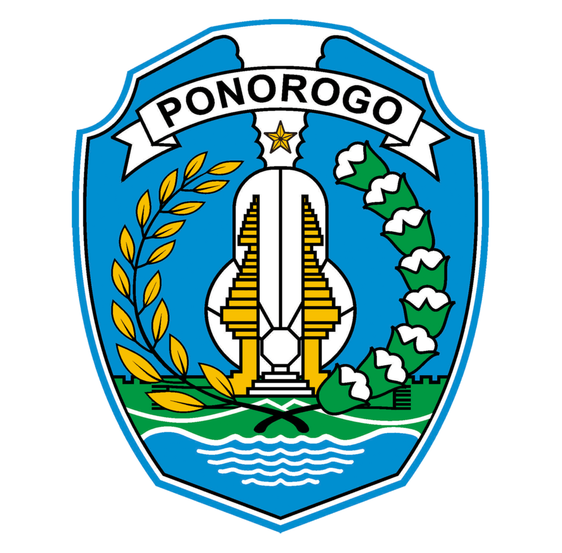

PONOROGO
KOTA REOG
Reog Ponorogo • Pelestarian Budaya di Era Digital • Potensi Ekonomi Kreatif Berbasis Budaya Lokal

Profil Daerah & Pengembang
Sistem Informasi Multimedia Terpadu
Tantangan Kearifan Lokal Ponorogo
Analisis tantangan pelestarian Reog Ponorogo beserta solusi inovatif di era modern.
Tantangan Utama
-
Globalisasi
Globalisasi menimbulkan tantangan serius bagi pelestarian kearifan lokal Ponorogo, khususnya kesenian Reog, karena dominasi budaya global dan westernisasi yang menyebabkan erosi tradisi dan identitas lokal, serta minimnya minat generasi muda terhadap seni tradisional. Orientasi kehidupan yang individualis, hedonis, dan materialistik menggeser sistem nilai sosial dan moral masyarakat Ponorogo, sehingga banyak generasi muda lebih memilih mengikuti tren budaya modern daripada melestarikan Reog. Urbanisasi juga memperparah kondisi ini karena generasi muda pindah ke kota besar untuk bekerja dan pendidikan, sehingga tidak partisipasi dalam upacara adat dan latihan Reog. Selain itu, Reog terasa ketinggalan zaman di tengah arus teknologi digital dan informasi global yang cepat, serta mengalami komodifikasi budaya yang mengubah makna dan fungsi asli Reog menjadi objek konsumsi.
-
Urbanisasi
Urbanisasi merupakan tantangan serius yang mengancam pelestarian kearifan lokal Ponorogo, terutama kesenian Reog dan nilai Warok, karena generasi muda Ponorogo pindah ke kota besar untuk kerja dan pendidikan, sehingga menyebabkan berkurangnya partisipasi dalam upacara adat seperti Festival Reog Remaja dan Grebeg Suro, serta hilangnya tradisi lokal karena pengaruh budaya populer global yang mengadopsi gaya hidup modern.
-
Perkembangan Teknologi
Perkembangan teknologi membuat kearifan lokal Ponorogo (Reog) susah lestari karena anak muda lebih sibuk main game, TikTok, dan media sosial, sehingga malas ikut latihan Reog dan kehilangan minat pada keterampilan tradisional. Kesenjangan digital antara kota dan desa juga menghambat dokumentasi Reog secara digital karena sanggar tidak punya internet cepat dan perangkat yang memadai.
Kepedulian Generasi Muda
Kepedulian terhadap generasi muda dalam pelestarian kearifan lokal Ponorogo masih rendah karena banyak generasi muda yang tidak tertarik pada Reog dan lebih memilih budaya modern seperti game, TikTok, dan musik barat, sehingga minim partisipasi dalam latihan Reog dan tidak ngerti nilai baik yang ada di Reog seperti keberanian, tanggung jawab, dan silaturahmi. Banyak juga generasi muda yang pindah ke kota (urbanisasi) untuk kerja dan sekolah, sehingga tidak ikut upacara adat seperti Festival Reog Remaja dan Grebeg Suro, serta kehilangan identitas budaya Ponorogo. Selain itu, kurangnya edukasi tentang nilai Islam dan kearifan lokal dalam Reog membuat generasi muda tidak tahu bahwa Reog adalah media dakwah yang membentuk karakter disiplin, pemberani, dan kerja sama tim. Kepedulian orang tua, guru, dan masyarakat juga rendah karena menganggap Reog ketinggalan zaman dan tidak relevan dengan kehidupan modern, sehingga generasi muda tidak mendapat dukungan untuk ikut Reog.
Inovasi Pelestarian
Ekosistem Budaya
Merumuskan Reog Ponorogo sebagai identitas budaya sekaligus penggerak ekonomi lokal. Mengintegrasikan budaya ke kehidupan sehari-hari.
Program Pemerintah
"Tadaraus Budaya" setiap 15 Ramadhan di alun-alun, memadukan seni dan spiritualitas. Ekstrakurikuler Reog di sekolah sebagai media pelestarian.
Potensi Digitalisasi Budaya
Digitalisasi dokumen, foto, dan filosofi Reog untuk mencegah kerusakan fisik.
Konten TikTok, Instagram, dan video pendek untuk menarik generasi muda dan memperkenalkan Dadak Merah.
Animasi, game, UMKM topeng & kostum Reog, serta pemanfaatan kekayaan intelektual budaya.
Podcast, infografis, pertunjukan virtual, dan partisipasi masyarakat melalui teknologi canggih.
Reog Ponorogo di Tengah Arus Modernisasi
Reog Ponorogo bukan sekadar tarian, melainkan warisan budaya yang sarat nilai wirasasra dan wiramuda. Namun di era globalisasi, nilai sakralnya sering hanya menjadi hiburan visual untuk menarik turis mancanegara.
Urbanisasi menyebabkan banyak pemuda merantau, sehingga tradisi nyadran dan sedekah bumi yang mengandalkan gotong royong semakin sulit dilaksanakan. Perkembangan teknologi membawa kesenjangan literasi digital dan pergeseran minat generasi muda.
Meski demikian, semangat generasi muda tetap terlihat dari antusiasme festival Reog Remaja. Inovasi seperti Tadaraus Budaya, ekstrakurikuler sekolah, dan digitalisasi konten menjadi harapan pelestarian Reog Ponorogo sebagai identitas daerah dan penggerak ekonomi kreatif.
Simulasi Presentasi Video Edukasi AI
Media presentasi digital berbasis Reog Ponorogo
Modul Multimedia: Pelestarian Reog Ponorogo di Era Digital
GAME BENAR ATAU SALAH
Tentukan apakah pernyataan berikut benar atau salah.
Memuat soal...
Tes Pemahaman Reog Ponorogo
Sertifikat Wawasan Reog
Piagam ini diberikan kepada:
NAMA SISWA
Skor Nilai
100
Predikat
PELAKU REOG